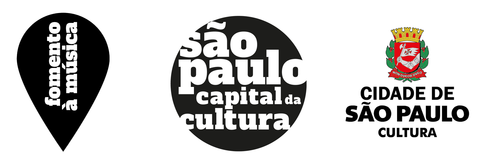
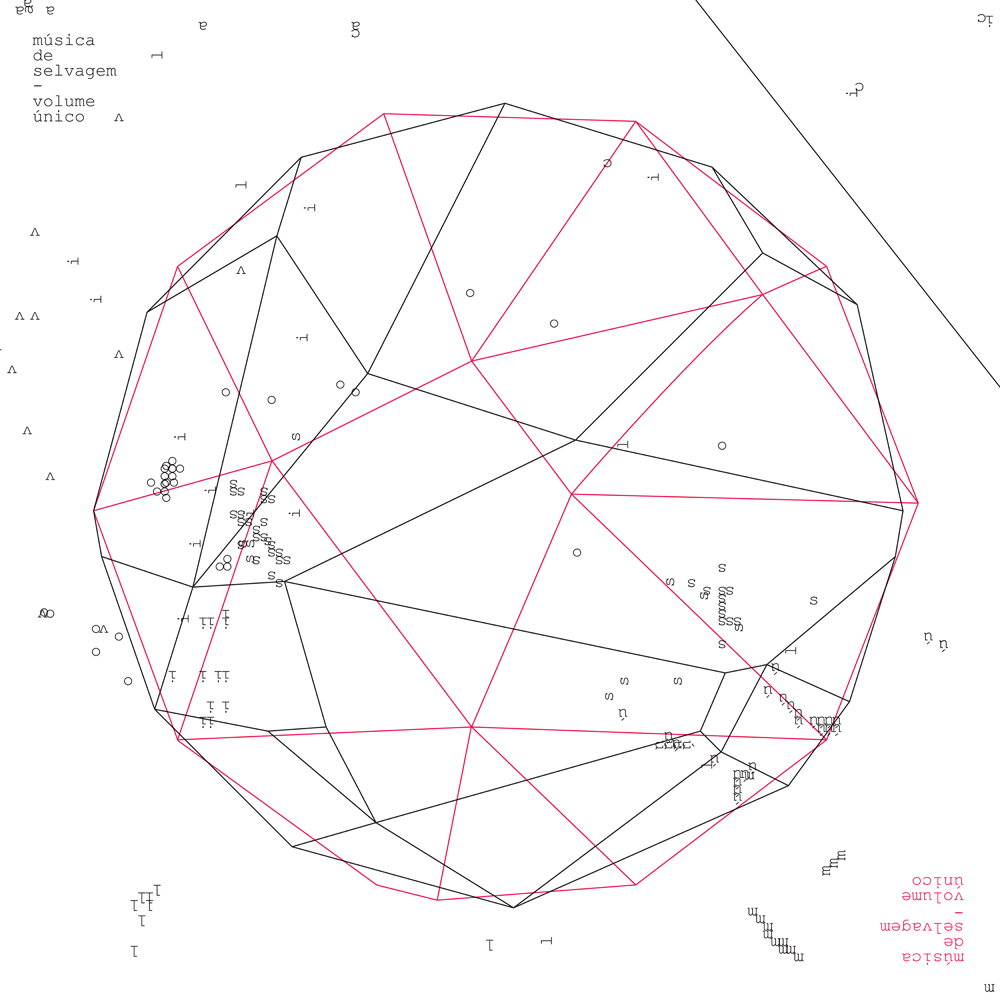

Pensamento Selvagem (2021)

Pensamento Selvagem
Talvez "Pensamento Selvagem", novo projeto do Música de Selvagem, seja uma tentativa do grupo de responder a uma grande pergunta: quem é o Música de Selvagem?
Fracassaremos nessa tentativa, porque obviamente é impossível responder esse tipo de pergunta, mas pelo menos ao longo do processo algumas coisas ficaram mais claras. O "Pensamento Selvagem" foi esclarecedor em relação à identidade do grupo - o nome, e também o porquê do nome.
"Música de Selvagem" veio de uma história de racismo e xenofobia. A ideia era dar nome a um grupo em resposta a um ato odioso - devolver para o universo algo positivo, reforçar que a palavra ”selvagem” não é uma ofensa, algo pejorativo, muito pelo contrário.
Com o passar dos anos, muito sobre esse nome foi se revelando, significados que não foram premeditados mas já estavam lá (ainda imperceptíveis, talvez intuídos). Quando entramos em contato com a obra de Lévi-Strauss, descobrimos que muito tempo antes ele advogou a favor do termo “selvagem”.
Strauss estudou civilizações consideradas primitivas aqui no Brasil e no mundo, catalogou essas culturas e registrou centenas de mitos. Explicou que o pensamento selvagem é de todos os humanos e está em todas as culturas, do passado, do presente e do futuro. Não é inferior nem se opõe ao pensamento científico, é complementar. E está em perfeita sintonia com a arte.
É uma forma valiosa de pensamento, que concede aos homens sabedorias únicas e enriquece suas relações com o mundo que habita. Entender melhor o que é o pensamento selvagem de Lévi-Strauss nos ajudou a entender melhor quem somos e o que estamos tentando fazer.
Um bom exemplo é a identificação que tivemos com o conceito de bricolage, tão recorrente na obra de Lévi-Strauss. Ele pode ser descrito como uma forma de pensar mais intuitiva, imaginativa, que ressignifica em permanência o mundo ao redor e que aceita tudo como recurso ou matéria-prima potencial - tudo isso converge perfeitamente com a pesquisa musical do grupo. A bricolage é mais empírica do que premeditada, nela o plano se constrói na ação e o processo é decisivo porque produz significado, como na improvisação musical.
O pensamento selvagem acontece precisamente na transformação da natureza em cultura, o "cru" e o "cozido", que, não à toa, virou o eixo estruturante do nosso álbum.
Buscamos nesse projeto nos desviar daquilo que já conhecíamos previamente através de uma proposta de criação menos idiomática. Foi na verdade uma tentativa quase utópica de alcançar justamente esse lugar transitório entre o "cru" e o "cozido".
Inclusive, de certo modo, essa busca já estava presente mesmo antes desse projeto. Por isso nossa dificuldade em nos classificar, essa nossa permanente crise de personalidade: improvisação livre, música experimental, free jazz, música contemporânea - nenhum desses termos nos contempla de fato.
A principal matéria-prima do álbum "Pensamento Selvagem" está fora/além da música; é a internet, o imenso repositório de cultura humana, aquela que é capaz de produzir tantos mitos contemporâneos.
Inspirados pelo espírito catalogador de Lévi-Strauss, colhemos samples extraídos da internet e construímos, através de associações livres, um retrato (ou múltiplos retratos) do mundo em que vivemos.
Ao longo desse processo, aprofundamos a nossa pesquisa, entendemos melhor o que somos e esperamos que isso possa ser percebido por quem ouvir o resultado final deste trabalho.
-Este projeto foi realizado com apoio do 4º Edital de Apoio à Criação Artística – Linguagem Música - Secretaria Municipal de Cultura.

Volume Único (2018)
Volume Único
por Thiago França
"A tarefa de escrever sobre qualquer obra de arte só pode ser considerada simples se abordada de forma rasa e descompromissada, quiçá displicente. Escrever sobre arte é um problema pois criar um jogo de referências para entender uma obra é diminuir seu potencial e originalidade, induz o olhar do observador de forma castradora. Sem contar que ao final da maioria dos textos aprendemos mais sobre seus autores que sobre os objetos - coisas que tentarei evitar.
A pior missão a qual uma resenha pode se dispor é a de tentar explicar, desvendar significados escondidos como num enigma, um vide-o-verso de sentidos escamoteados em entrelinhas de escalas, acordes ou palavras. Não há verdade absoluta, sim-ou-não, como numa anedota dicotômica que perde a graça depois de revelada. O rolê da arte é outro - ou pode ou deve ser. Ao artista interessa a controvérsia, o paradoxo, o figurado, símbolos mutáveis que em constante movimento geram calor. A verdade literal é fria e solitária, mora num deserto empoeirado quase esquecida, nostálgica do dia em que veio ao mundo.
Os artistas mais atentos parecem estar desconectados do presente por terem abandonado a pressa da objetividade linear e trazer à tona o que falta à realidade ao invés de reverberar o que já está pronto. O tatibitati da literalidade só interessa às prateleiras das lojas de departamento e aos tijolinhos de jornal. Enquanto o entertainer tenta acertar os números da loto, o artista atira ao mar, engarrafados, seus mais fundos pensamentos, sem pressa de atingir destinatário.
Assim me apareceu “Volume Único”, em quatro canções repletas de camadas, fagocitadas pelo grupo que, em segundo plano, protagoniza o disco. Sem virtuosismo vulgar, sem execuções vetoriais, o disco se apresenta como organismo vivo onde vozes (letras) e banda (sons) se retroalimentam na construção dos arranjos, manuseiam o som em estado bruto (aqui, nada a ver com “brutal”), antes dos gêneros e das construções radiofônicas, sem verniz, sem curso de etiqueta. Batimentos (intervalos microtonais), assimetrias, dinâmicas e texturas criam um leque abrangente de sensações e eis um ponto crucial: as obras de arte demandam criatividade também de quem as apreciam.
Não há o que entender, não há explicação, apenas o quanto cada um estará disposto a mergulhar e se deixar levar, seja racional e pela força da inquietação da dúvida, seja sensorial e como mero espectador de frequências sonoras, seja as duas coisas. Muito mais interessante do que chegar a uma conclusão é caminhar pelas perguntas certas.
Respostas são para os fracos."